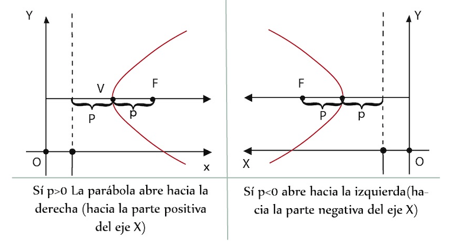

Definición
Es el lugar geométrico de los puntos de un plano que tiene equidistancia
respecto a un punto fijo y una recta. Este lugar se crea a partir de la
acción de un plano que es paralelo a la generatriz y que disecciona un cono circular.
(Representación a la cual hace referencia: verbal).
Considerando la posición del punto fijo F y la de la directriz, la parábola
con vértice en el origen puede abrir en forma horizontal (el foco está a la derecha o a
la izquierda del origen) o en forma vertical (el foco está arriba o abajo del origen).
Parábolas horizontales
Cuando se tiene el eje focal Horizontal y su vértice en el origen V (0,0,) la ecuación
toma la forma canónica sustituyendo los valores de las coordenadas del vértice en la ecuación
ordinaria ( y - k )2 = 4p ( x - h ).
La ecuación resultante es:
( y – 0 )2 = 4p ( x – h )
y2 = 4px
(Representación a la cual hace referencia: simbólica)
Eje focal sobre el eje X (horizontal)
(Representación a la cual hace referencia: Gráfica)
(Representación a la cual hace referencia: Tabular)
Parábolas verticales
Cuando el eje focal es vertical y su vértice en el origen V (0,0)
la ecuación tiene la forma ordinaria: ( x – k )2 = 4p ( y - h ).
(Representación a la cual hace referencia: simbólica)
Y sustituyendo las coordenadas del vértice
( x – 0 )2 = 4p ( y - 0 )
La ecuación resultante en su forma canónica es
x2 = 4py
(Representación a la cual hace referencia: simbólica)
(Representación a la cual hace referencia: Gráfica)
(Representación a la cual hace referencia: Tabular)
Parábolas horizontales y verticales con vértice fuera del origen
Veamos ahora el caso de parábolas cuyo vértice se encuentre en cualquier punto fuera del origen V(h. k).
Parábolas horizontales
La forma ordinaria de la ecuación de una parábola con vértice V (h, k), foco en
F(h + p, k) y directriz la recta x = h- p (parábola horizontal) es:
( y - k )2 = 4p ( x - h )
(Representación a la cual hace referencia: simbólica)

(Representación a la cual hace referencia: Gráfica)
(Representación a la cual hace referencia: Tabular)
Parábolas verticales
La forma ordinaria de la ecuación de una parábola con vértice v (h, k),
foco en el punto F (h, k +p) y directriz la recta y = k – p es :
( x – h )2 = 4p ( y - k )
El eje de la parábola es vertical y el foco está a P unidades (orientadas) del vértice.
Eje focal paralelo al eje y
(Representación a la cual hace referencia: Gráfica)
(Representación a la cual hace referencia: Tabular)
Ecuación general de la parábola
Conversión de la forma ordinaria a la forma general
Si consideramos las ecuaciones de la parábola con vértice en
cualquier punto del plano tendrá la ecuación:
( y – k )2 = 4p ( x - h ) ⇒ sí su eje focal es horizontal
( x – h )2 = 4p( y – k ) ⇒ sí su eje focal es vertical
La ecuación general se obtiene desarrollando el binomio al cuadrado
Y2 - 2ky + k2 = 4px – 4ph
igualando a cero la ecuación
Y2 – 4px - 2ky + k2 + 4ph = 0
En el desarrollo del binomio podemos definir las constantes, empleando el principio de cerradura de los números reales, de la siguiente manera:
-4p = D
-2k = E
K2 + 4ph = F
Por lo que la ecuación se transforma a:
y2 + Dx + Ey + F = 0 resultando la ecuación general de la parábola horizontal
Por analogía se concluye que la parábola con eje vertical será x2 + Dx + Ey + F = 0 donde:
-2h = D
-4p = E
h2 + 4pk = F
(Representación a la cual hace referencia: simbólica)